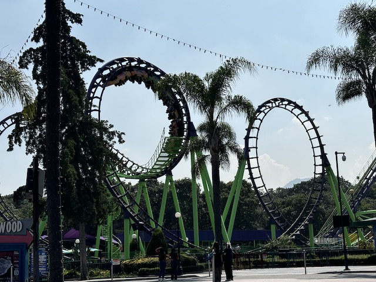
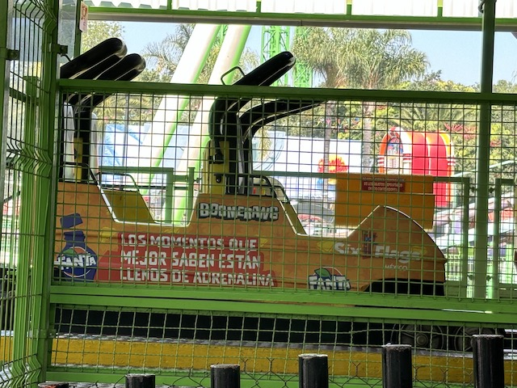
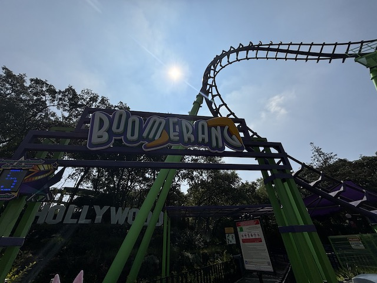

| |
Batgirl Batarang Review

We're here at Six Flags Mexico to ride your typical Boomerang. After climbing in the seat and pulling down the shoulder harness, you dispatch. Up the lift you go backwards. You get a pretty view of the park while going up the lift hill. On this Boomerang, once you get to the top, you drop. The drop is really fun and you get some nice speed. However, once you pull up into the sky as you enter the cobra roll, That's where the pain begins. After you slam into the restraint coming out of the 1st half of the Cobra Roll, you get slammed going into the 2nd half of the cobra roll. Then you go into a loop. The loop is all right and much better than the cobra roll, but it's still not that great. Then you climb up the second spike, as we climb up the second spike, you get a chance to recover, but then, you drop. Backwards you go. The loop is all right backwards, but its still not as good as other Boomerangs. And then you go backwards into the cobra roll. It really confuses you as it slams you backwards. And finally, after all the slamming is over, You glide into the station. Now this may be one of the roughest and worst Boomerangs, you may be thinking to yourself that this may be the oldest Boomerang ever. And.....it might be. There's a debate as to which Boomerang was first. This one (originally opening up at some random long defunct park called Rafaela Padilla) or some Boomerang at a random park in Belgium that's mostly known for credit whoring, the Boomerang is their only adult coaster, and the only other noteworthy thing about the park aside from credit whoring would be it somehow still has an operating Topple Tower. It ultimately doesn't matter. The point is this ride is OLD!! And it FEELS OLD!!! Now Six Flags Mexico rethemed, and possibly breathed new life into it. But at least in late 2024, this thing was ROUGH. Definately a one and done.
5/10
Location: Six Flags Mexico
Opened at Rafaela Padilla Park in 1984
Relocated to Six Flags Mexico in 1988
Built by: Vekoma
Last Ridden: October 18, 2024
I have ridden this exact same ride at the following parks.
Carowinds
Elitch Gardens
Geauga Lake
Hersheypark
Knotts Berry Farm
La Ronde
Lake Compounce
Power Park
Six Flags Discovory Kingdom
Six Flags Fiesta Texas
Six Flags Great Escape
Six Flags New England
Worlds of Fun
Batgirl Batarang Photos


Home
|